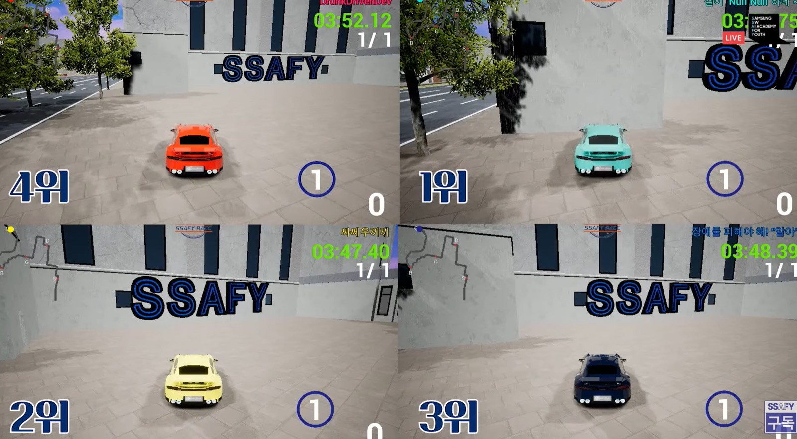

Environment
Python
Microsoft AirSim
Driving API
Algorithm
실시간 조향·속도 제어
빈 공간 탐색 회피
충돌 복구 상태 머신
AI 협업
가설 검정 루프
단일 변수 실험
인계 문서
배경 & 문제
삼성청년SW·AI아카데미에서 열린 자율주행 시뮬레이션 알고리즘 경진대회입니다(777명 · 278팀 참가). 실시간으로 주어지는 차량·도로 정보를 기반으로 조향·가속·감속을 제어해, 장애물이 배치된 다양한 트랙을 완주해야 합니다. 완주를 보장하면서 랩타임 단축을 목표로 설정하고, 반복적으로 기록을 체크하며 계획을 수정하고 보완했습니다.
한 일 — AI 협업 워크플로우
- 합의 — 시작 전 목표를 "완주를 보장하고 랩타임을 줄인다"로 정했습니다. 이를 위해 대회 규칙과 API 명세, 제어할 수 있는 변수를 전달했습니다. 코드는 AI가 제시하고, 이유를 확인한 뒤 반영하고, 실행해서 기록을 확인했습니다.
- 계획 — 변수값 수정은 하나씩만 했습니다. 기록이 검증된 파일은 그대로 두고 실험은 새 파일에서 해서, 나빠지면 바로 되돌렸습니다.
- 확인 — 랩타임만으로는 왜 느린지 알 수 없어서 주행 화면을 녹화해 돌려 봤습니다. 코스를 벗어나는 순간의 로그를 열어 그때 속도와 조향값을 확인했습니다. 원인을 찾은 뒤에 코드를 고쳤습니다.
- 회고 — 채택한 변경과 기각한 실험을 모두 문서에 남겨, AI가 다음 세션에서 그 기록을 근거로 쓰게 했습니다.
알고리즘 파이프라인 — AI와 함께 만든 과정까지
위쪽은 주행 알고리즘의 구조와 파라미터를 결정한 AI 가설 검정 루프입니다. 아래쪽은 그 루프를 최종적으로 통과한 주행 알고리즘입니다. 각 변수를 어떻게 고칠지는 AI 분석을 근거로 판단했습니다.
flowchart TD
subgraph LOOP["AI 가설 검정 루프 — 알고리즘을 만든 과정"]
HYP(가설 수립 — AI와 주행 로그 분석) --> IMP(구현 — 한 번에 변수 하나만)
IMP --> MEA(측정 — 랩타임 · 완주 여부)
MEA --> JUD{뚜렷한 개선인가?}
JUD -->|채택| DOC(인계 문서에 검증된 인과 기록)
JUD -->|기각| DOC2(기각 사유 기록)
DOC --> HYP
DOC2 --> HYP
end
LOOP ==>|구조 · 파라미터 결정| TICK
subgraph TICK["주행 알고리즘 — 매 틱 실행"]
SEN(센싱 — 위치·속도·전방 커브각·장애물) --> MRG(장애물 통합 — 느린 상대 차량도 장애물로)
MRG --> GAP(빈 공간 탐색 — 도로를 0.1m 격자로 놓고
가장 가까운 빈 공간을 목표로)
GAP --> STR(조향 — 전방 커브각 추종 + 목표 지점 보정
급커브는 회전 반경 기하로 전환)
STR --> SPD(속도 — 기본 풀스로틀 · 임계값 기반 감속)
SPD --> CHK{충돌 · 역주행?}
CHK -->|정상| SEN
CHK -->|사고| REC(복구 상태 머신 — 후진 탈출 → 전진 복귀)
REC --> SEN
end
classDef default fill:#f7f5fa,stroke:#c9c2d6,color:#171717;
classDef judge fill:#f9edf0,stroke:#800020,color:#800020;
class JUD,CHK judge;
저희 주행 알고리즘의 핵심은 회피 로직입니다. 장애물 수마다 분기하던 코드를 "가까운 빈 공간으로 향한다" 하나로 통일했고, 측정에서 랩타임과 완주율이 함께 개선돼 채택했습니다.
결과 & 배운 점
AI를 통해 가설을 세우고 측정으로 채택·기각을 판단하고 그 이력을 문서로 저장하는 가설 검정 사이클을 반복한 결과, 278팀이 참가한 대회에서 2위를 기록했습니다.
스크린샷

